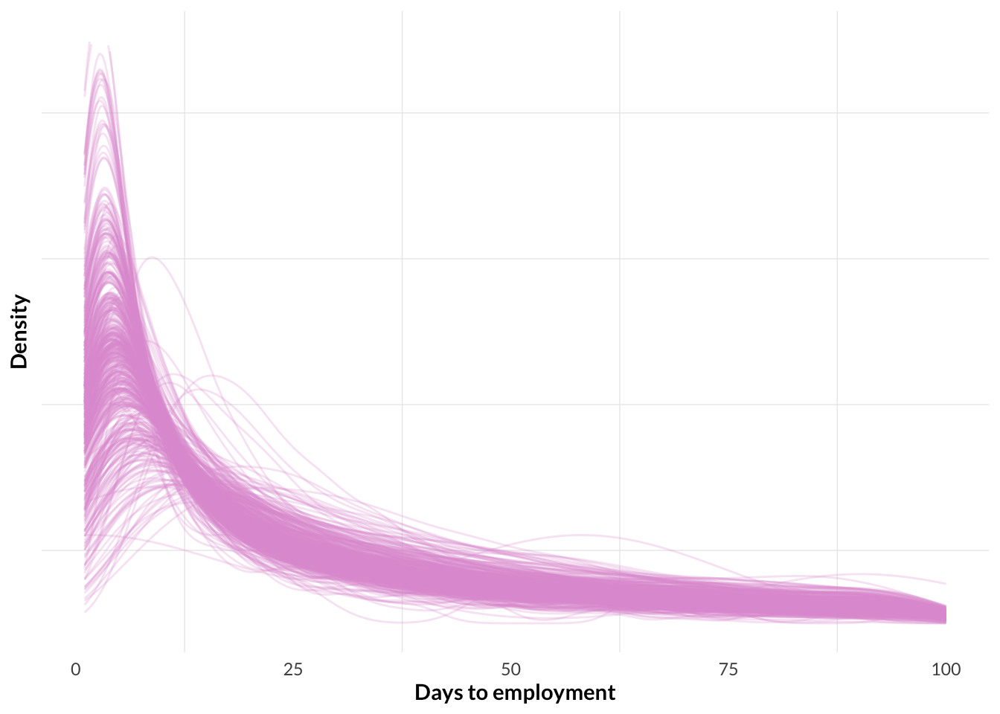
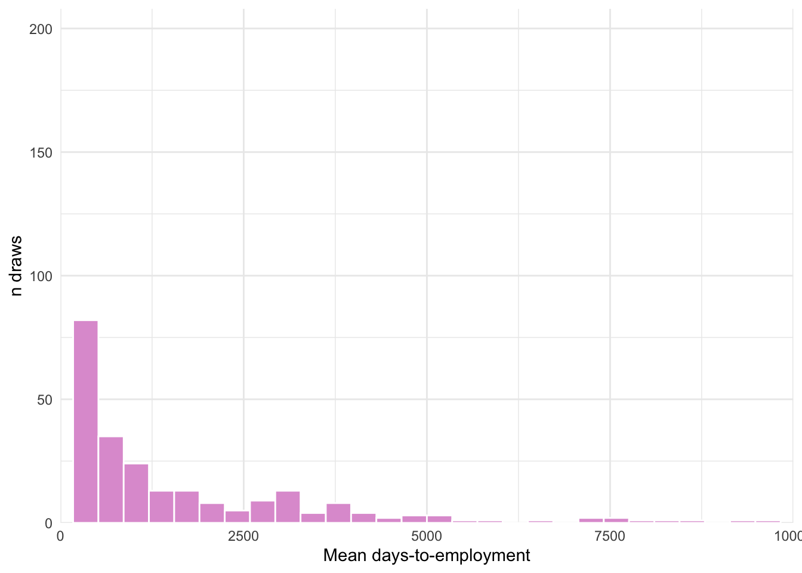

library(tidyverse)
library(lavaan)
library(blavaan)
library(brms)
library(tidybayes)
library(survival)
library(survminer)
# MCMC specifications
options(brms.backend = "cmdstanr")
options(mc.cores = parallel::detectCores())6 Bayesian CFA
Summary
I recently did an analysis for a client who designs workforce skills training programs. The client was interested in the relationship between several latent skills for which they had collected measurements, and time-to-employment following a skills training program. This document presents the Bayesian workflow I used for that analysis, which involved simultaneously estimating the construct validity of the latent variables and including them as regressors in a time-to-event analysis. Along the way I show various approaches to simulating latent variable and time-to-event data for model validation, and demonstrate the advantages of the Bayesian approach compared to traditional two-stage approaches involving factor score point estimates.
Introduction
In the previous sections we’ve explored various aspects of the traditional workflow for Confirmatory Factor Analysis, including the basic model structure, validity and reliability, model goodness of fit tests, tests for measurement invariance, and experimenting with custom error covariance structures. These are all helpful tools for specifying quantitative theories about imaginary constructs, and testing those theories with data.
But often you’ll want to do more than just convince me the data are consistent with the Primordial CFA DAG of Confounding: you’ll also have some theories about how those imagined constructs relate to other measurements or latent constructs. This opens the door to Structural Equation Modelling (SEM), which is a framework for simultaneously convincing you that my data are consistent with the imaginary constructs I have in mind, and that my data are consistent with those constructs relating to each other according to a specific causal structure. It basically allows us to do regression with latent variables.
Before we explore a traditional SEM workflow that tests for causal relationships between unmeasured variables, we can first explore a more basic situation where we only have latent predictors, and want to estimate the relationship between those latent predictors and an observed outcome. A traditional way of incorporating a CFA measurement model into a fuller regression analysis for a measured dependent variable proceeds in two steps:
- first you fit the CFA model;
- then you fit the substantive regression, incorporating the latent variable into the regression by generating factor scores from the CFA model for each observation and including those as a regression covariate.
But this approach is unsatisfactory because factor scores are a function of the CFA model’s parameter estimates (the estimates of the factor loadings), about which there is uncertainty. So if we only give our substantive regression model a point-estimate factor score from the CFA model, we ignore the uncertainty contained in the standard errors of the CFA model’s factor loading estimates. This is the approach taken by Kankaraš, Feron, and Renbarger (2019); they use point-estimate factor scores as predictors in subsequent regressions. In some cases they even do this iteratively, fitting measurement models on point-estimate factor scores from measurement models fit on point-estimate factor scores, and using those point-estimates as regression predictors! In their analysis they don’t even report the standard errors of the factor loadings from their measurement models.
A better option is to fit a Bayesian model that carries out both the measurement model and the substantive regression model simultaneously, so that the model can incorporate its uncertainty from the CFA model into its substantive parameter estimates and predictions. This approach is essentially just a Bayesian missing data analysis, where the factor scores are treated as missing data and the model estimates a unique parameter for each missing value, along with its own unique posterior distribution. In this document I demonstrate how to implement this approach with Stan, incorporating concepts from previous sections such as MTMM factor analysis. We’ll proceed as follows:
- Fit a simple Bayesian CFA with orthogonal covariates and a basic measurement error covariance structure. We use the brms package to illustrate how Bayesian factor analysis is the same as Bayesian missing data analysis, but when all of your observations are missing;
- Fit the same Bayesian CFA, but specifying correlated factors. The brms package can’t yet handle custom covariance structures for latent factors, so we upgrade to raw Stan;
- Update the model to include a custom error covariance structure à la MTMM;
- Combine the MTMM model from the previous step with a time-to-event model.
- Expand the model to include multilevel structure, with correlated varying effects for the regression predictors.
At each stage we’ll stick with the same basic scenario: our client has invented scales for the latent skills “adaptability” and “collaboration”, and they’re interested in testing the validity of those scales and estimating their relationship with time-to-employment for their program participants. At each stage of the analysis we’ll simulate a new dataset reflecting our updated model, and show that the model can recover the true simulation parameter estimates.
First Example: Simple Factor Structure with brms
In this section we’ll see how to specify a Bayesian CFA model in brms. Nothing fancy, just two orthogonal factors, each with three measurements. Here’s the full model definition:
\[ \begin{aligned} \begin{bmatrix} m_{1} \\ m_{2} \\ m_{3} \\ m_{4} \\ m_{5} \\ m_{6} \end{bmatrix} &\sim \text{MVNormal} \left( \begin{bmatrix} \mu_{m1} \\ \mu_{m2} \\ \mu_{m3} \\ \mu_{m4} \\ \mu_{m5} \\ \mu_{m6} \end{bmatrix}, \Sigma_m \right) \\ \\ \mu_{m1} &= \lambda_1 \text{adapt}, \quad \mu_{m2} = \lambda_2 \text{adapt}, \quad \mu_{m3} = \lambda_3 \text{adapt} \\ \mu_{m4} &= \lambda_4 \text{collab}, \quad \mu_{m5} = \lambda_5 \text{collab}, \quad \mu_{m6} = \lambda_6 \text{collab} \\ \\ \begin{bmatrix} \text{adapt}_{i} \\ \text{collab}_{i} \end{bmatrix} &\sim \text{MVNormal} \left( \begin{bmatrix} \mu_\text{adapt} \\ \mu_\text{collab} \end{bmatrix}, \Sigma_f \right) \\ \\ \Sigma_f &= \begin{bmatrix} \sigma_\text{adapt}^2 & 0 \\ 0 & \sigma_\text{adapt}^2 \end{bmatrix} \\ \\ \Sigma_m &= \begin{bmatrix} \sigma_{m1}^2 & 0 & 0 & 0 & 0 & 0 \\ 0 & \sigma_{m2}^2 & 0 & 0 & 0 & 0 \\ 0 & 0 & \sigma_{m3}^2 & 0 & 0 & 0 \\ 0 & 0 & 0 & \sigma_{m4}^2 & 0 & 0 \\ 0 & 0 & 0 & 0 & \sigma_{m5}^2 & 0 \\ 0 & 0 & 0 & 0 & 0 & \sigma_{m6}^2 \end{bmatrix} \end{aligned} \]
I’ve worked from the approach shared by Jack Bailey in a post on the Stan forum.
First we can simulate some data with the given factor structure using the lavaan package’s handy simulateData() function:
# Specify the factor structure in classic lavaan syntax
pop.model <- '
f1 =~ .8*m1 + .1*m2 + .6*m3 + .2*m4 + .9*m5 + -.4*m6
'
# Simulate data from the specified model
fake_dat <- lavaan::simulateData(model = pop.model, sample.nobs = 4000)
# Visualize the measured data
fake_dat |>
select(m1, m2, m3, m4, m5, m6) |>
pivot_longer(everything(), names_to = "var", values_to = "measurement") |>
ggplot() +
geom_histogram(aes(x = measurement), fill = "mediumorchid") +
facet_wrap(~var) +
theme_bw()
Here’s how we can specify a Bayesian model in brms that recovers the simulation parameter values. I like this approach because it gives a nice conceptual perspective on what we’re actually doing when we’re doing latant variable modelling: we’re just doing a linear regression where the measured variables are all drawn from a shared multivariate normal distribution, and where the linear model component of their location parameters include a covariate for which we only have missing data.
# Add a latent variable to the dataset
fake_dat$f1 <- NA_real_
bfit.1 <- brm(
formula =
bf(m1 ~ 0 + mi(f1)) +
bf(m2 ~ 0 + mi(f1)) +
bf(m3 ~ 0 + mi(f1)) +
bf(m4 ~ 0 + mi(f1)) +
bf(m5 ~ 0 + mi(f1)) +
bf(m6 ~ 0 + mi(f1)) +
bf(f1| mi() ~ 1) +
set_rescor(rescor = FALSE),
family = gaussian(),
prior =
prior(constant(1), class = "b", resp = "m1") +
prior(constant(1), class = "sigma", resp = "m1") +
prior(normal(0, 10), class = "b", resp = "m2") +
prior(constant(1), class = "sigma", resp = "m2") +
prior(normal(0, 10), class = "b", resp = "m3") +
prior(constant(1), class = "sigma", resp = "m3") +
prior(normal(0, 10), class = "b", resp = "m4") +
prior(constant(1), class = "sigma", resp = "m4") +
prior(normal(0, 10), class = "b", resp = "m5") +
prior(constant(1), class = "sigma", resp = "m5") +
prior(normal(0, 10), class = "b", resp = "m6") +
prior(constant(1), class = "sigma", resp = "m6") +
prior(normal(0, 10), class = "Intercept", resp = "f1") +
prior(cauchy(0, 1), class = "sigma", resp = "f1"),
data = fake_dat,
warmup = 1000,
iter = 6000,
file = "fits/b07.01.rds"
)A Bayesian missing data model treats each missing observation as a parameter to estimate. And since the factor is missing in each row of the dataset, this means we end up with 6000 samples for each row of data we have, resulting in a pretty big model file. This is too big for Github, so I’ll only push the draws we need to replicate the figure below.
First we can put the draws we need into a tidy format and do some cleaning:
bfit.1.samples <- bfit.1 |>
# Get the raw MCMC samples
gather_draws(
bsp_m2_mif1,
bsp_m3_mif1,
bsp_m4_mif1,
bsp_m5_mif1,
bsp_m6_mif1
) |>
# Do some renaming for clarity
mutate(.variable = case_when(
.variable == "bsp_m2_mif1" ~ "Loading for m2",
.variable == "bsp_m3_mif1" ~ "Loading for m3",
.variable == "bsp_m4_mif1" ~ "Loading for m4",
.variable == "bsp_m5_mif1" ~ "Loading for m5",
.variable == "bsp_m6_mif1" ~ "Loading for m6"
)) |>
# Add the true factor loadings from above
mutate(true_loading = case_when(
.variable == "Loading for m2" ~ .1,
.variable == "Loading for m3" ~ .6,
.variable == "Loading for m4" ~ .2,
.variable == "Loading for m5" ~ .9,
.variable == "Loading for m6" ~ -.4
))
# Save the tidy draws for reproducibility
saveRDS(bfit.1.samples, "fits/b07.01.samples.rds")Now we can plot. Looks like STAN does an OK job at recovering the true factor loadings (we exclude the first loading since it was held constant at 1 to provide the scale for the latent variable):
# Load the tidy samples
bfit.1.samples <- readRDS("fits/b07.01.samples.rds")
# Plot
bfit.1.samples|>
ggplot(aes(x = .value, fill = .variable)) +
stat_halfeye(fill = "mediumorchid") +
geom_vline(aes(xintercept = true_loading), linetype = 2) +
scale_x_continuous(expand = c(0, 0.015)) +
scale_y_continuous(expand = c(0, 0.015)) +
guides(fill = "none") +
labs(x = "lab",
y = NULL) +
facet_wrap(~.variable) +
theme_minimal() +
theme(panel.grid.major = element_blank())
In all cases the model is pretty close to the true parameter value. It’s a bit concerning when the standard errors are so small they fail to capture the true values, but this illustrates the general proof of concept: we can do a pretty good CFA in {{brms}}.
6.1 Second Example: Correlated factors
Now an example where we assume the latent vactors are themselves dependent, so that discriminant validity is questionable. So we can include a term for their correlation structure in the model. Here’s the updated model definition:
\[ \begin{aligned} \begin{bmatrix} m_{1} \\ m_{2} \\ m_{3} \\ m_{4} \\ m_{5} \\ m_{6} \end{bmatrix} &\sim \text{MVNormal} \left( \begin{bmatrix} \mu_{m1} \\ \mu_{m2} \\ \mu_{m3} \\ \mu_{m4} \\ \mu_{m5} \\ \mu_{m6} \end{bmatrix}, \Sigma_m \right) \\ \\ \mu_{m1} &= \lambda_1 \text{adapt}, \quad \mu_{m2} = \lambda_2 \text{adapt}, \quad \mu_{m3} = \lambda_3 \text{adapt} \\ \mu_{m4} &= \lambda_4 \text{collab}, \quad \mu_{m5} = \lambda_5 \text{collab}, \quad \mu_{m6} = \lambda_6 \text{collab} \\ \\ \begin{bmatrix} \text{adapt}_{i} \\ \text{collab}_{i} \end{bmatrix} &\sim \text{MVNormal} \left( \begin{bmatrix} \mu_\text{adapt} \\ \mu_\text{collab} \end{bmatrix}, \Sigma_f \right) \\ \\ \Sigma_f &= \begin{bmatrix} \sigma_\text{adapt}^2 & \color{orchid}{\rho \sigma_\text{adapt} \sigma_\text{collab}} \\ \color{orchid}{\rho \sigma_\text{adapt} \sigma_\text{collab}} & \sigma_\text{adapt}^2 \end{bmatrix} \\ \Sigma_m &= \begin{bmatrix} \sigma_{m1}^2 & 0 & 0 & 0 & 0 & 0 \\ 0 & \sigma_{m2}^2 & 0 & 0 & 0 & 0 \\ 0 & 0 & \sigma_{m3}^2 & 0 & 0 & 0 \\ 0 & 0 & 0 & \sigma_{m4}^2 & 0 & 0 \\ 0 & 0 & 0 & 0 & \sigma_{m5}^2 & 0 \\ 0 & 0 & 0 & 0 & 0 & \sigma_{m6}^2 \end{bmatrix} \end{aligned} \]
We’ll need to amend the lavaan model structure to implement these changes.
# Declare the new model with correlated factors
correlated.factors.model <- '
f1 =~ .8*m1 + .6*m2 + .9*m3
f2 =~ .1*m4 + .2*m5 + -.4*m6
f1 ~~ .4*f2
'
# Simulate data from the model
fake_dat <- lavaan::simulateData(model = correlated.factors.model, sample.nobs = 4000)The complication here is that brms doesn’t currently support setting constraints on individual correlation terms in the model, even in the form of constant priors. There seems to be a plan to include more SEM-like flexibility of covariance matrixes in general in brms 3.0, but for now we’ll need to specify the model using raw Stan code. There seem to be a few strategies for avoiding convergence issues when fitting this kind of model in Stan. I worked closely from the strategy provided in this Stan forum comment by Mauricio Garnier-Villarre, making a few minor adjustments such as removing latent intercepts from the linear predictors to better align this model with the {{lavaan}} defaults.
Here is the raw Stan code. I also declare it as a string in a hidden R block so we can use {{cmdstanr}}’s autoformatting function before we compile.
data {
int N; // sample size
int P; // number of variables
int D; // number of factors
array[N] vector[P] X; // data matrix of order [N,P]
int n_lam; // how many factor loadings are estimated
}
parameters {
matrix[N, D] FS_UNC; // factor scores, matrix of order [N,D]
cholesky_factor_corr[D] L_corr_d; // cholesky correlation between factors
vector<lower=0>[P] sd_p; // residual sd for each variable
vector<lower=-30, upper=30>[n_lam] lam_UNC; // A bunch of lightly-constrained factor loadings
}
transformed parameters {
// a vector to hold the factor means, which will be a bunch of 0s
vector[D] M;
M = rep_vector(0, D);
// a vector to hold the factor SDs, which will be a bunch of 1s.
vector<lower=0>[D] Sd_d;
Sd_d = rep_vector(1, D);
// A vector to hold the linear predictors for the manifest variables, which are each a deterministic function of loading*factor_score
array[N] vector[P] mu_UNC;
for (i in 1 : N) {
mu_UNC[i, 1] = lam_UNC[1] * FS_UNC[i, 1];
mu_UNC[i, 2] = lam_UNC[2] * FS_UNC[i, 1];
mu_UNC[i, 3] = lam_UNC[3] * FS_UNC[i, 1];
mu_UNC[i, 4] = lam_UNC[4] * FS_UNC[i, 2];
mu_UNC[i, 5] = lam_UNC[5] * FS_UNC[i, 2];
mu_UNC[i, 6] = lam_UNC[6] * FS_UNC[i, 2];
}
// the var-covar matrix for the factors, a deterministic function of the deterministic SDs and the estimated rhos defined in parameters{}
cholesky_factor_cov[D] L_Sigma;
L_Sigma = diag_pre_multiply(Sd_d, L_corr_d);
}
model {
// Declare some priors
L_corr_d ~ lkj_corr_cholesky(1); // Prior on factor corrs
lam_UNC ~ normal(0, 10); // Prior on loadings
sd_p ~ cauchy(0, 2.5); // Prior on residual SDs of manifest variables
// Set up the likelihoods of the manifest and latent factors
for (i in 1 : N) {
for (j in 1 : P) {
// Manifest variables
X[i, j] ~ normal(mu_UNC[i, j], sd_p[j]);
}
// Latent factors
FS_UNC[i] ~ multi_normal_cholesky(M, L_Sigma);
}
}
generated quantities {
array[N] real log_lik; // log likelihood of each datapoint
real dev; // global deviance
real log_lik0; // global log likelihood
vector[N] log_lik_row;
cov_matrix[P] Sigma; // Covariance matrix of the manifest variables
cov_matrix[D] Phi_lv; // Covariance matrix of the latent factors
matrix[P, P] lambda_phi_lambda; // I think these are the terms of the reconstructed var-covar matrix of the data?
cholesky_factor_cov[P] L_Sigma_model; // I think this is the cholesky decomposition of the reconstructued var-covar matrix above?
matrix[P, P] theta_del; // I think this is Matrix containing the error terms for the reconstructed empirical var-covar matrix?
corr_matrix[D] Rho_UNC; /// correlation matrix
corr_matrix[D] Rho; /// correlation matrix
matrix[P, D] lam; // factor loadings
matrix[N, D] FS; // factor scores, matrix of order [N,D]
// Do some fancy things to sign-correct the parameter estimates.
// The idea seems to be that when we estimate the loadings with unconstrained signs
// It can lead to identification issues. So we take these steps to correct the signs.
// See this Stan forum comment for more: https://discourse.mc-stan.org/t/non-convergence-of-latent-variable-model/12450/10?
Rho_UNC = multiply_lower_tri_self_transpose(L_corr_d);
Rho = Rho_UNC;
FS = FS_UNC;
lam = rep_matrix(0, P, D);
lam[1 : 3, 1] = to_vector(lam_UNC[1 : 3]);
lam[4 : 6, 2] = to_vector(lam_UNC[4 : 6]);
// factor 1
if (lam_UNC[1] < 0) {
lam[1 : 3, 1] = to_vector(-1 * lam_UNC[1 : 3]);
FS[ : , 1] = to_vector(-1 * FS_UNC[ : , 1]);
if (lam_UNC[4] > 0) {
Rho[1, 2] = -1 * Rho_UNC[1, 2];
Rho[2, 1] = -1 * Rho_UNC[2, 1];
}
}
// factor 2
if (lam_UNC[4] < 0) {
lam[4 : 6, 2] = to_vector(-1 * lam_UNC[4 : 6]);
FS[ : , 2] = to_vector(-1 * FS_UNC[ : , 2]);
if (lam_UNC[1] > 0) {
Rho[2, 1] = -1 * Rho_UNC[2, 1];
Rho[1, 2] = -1 * Rho_UNC[1, 2];
}
}
/// marginal log-likelihood based on signed corrected parameters
Phi_lv = quad_form_diag(Rho, Sd_d);
lambda_phi_lambda = quad_form_sym(Phi_lv, transpose(lam));
theta_del = diag_matrix(sd_p);
Sigma = lambda_phi_lambda + theta_del;
L_Sigma_model = cholesky_decompose(Sigma);
for (i in 1 : N) {
log_lik[i] = multi_normal_cholesky_lpdf(X[i] | rep_vector(0, P), L_Sigma_model);
}
log_lik0 = sum(log_lik); // global log-likelihood
dev = -2 * log_lik0; // model deviance
}Now we can compile and run the model
# Write the raw Stan code from an R string to a Stan file
stan_file <- cmdstanr::write_stan_file(stan_model_code)
# Autoformat the model syntax to preempt any warnings at compile time
model <- cmdstanr::cmdstan_model(stan_file, compile = FALSE)
model$format(canonicalize = TRUE)
# Compile the model from the Stan file
model <- cmdstanr::cmdstan_model(stan_file)
# Put the data into a list format Stan can understand
X <- as.matrix(fake_dat)
P <- ncol(fake_dat)
N <- nrow(fake_dat)
D <- 2
data_list <- list(N=N,P=P,D=D,X=X, n_lam=6)
param <- c("lam","Rho","sd_p","M","Sd_d",
"log_lik0","dev","log_lik")
# Fit the model
fit <- model$sample(
data = data_list,
seed = 199,
chains = 4,
parallel_chains = 4,
iter_warmup = 1000,
iter_sampling = 6000,
adapt_delta=0.99,
max_treedepth = 12,
refresh = 1 # print update every 500 iters
)
# Save the resulting model fit
saveRDS(fit, "fits/b07.02.rds")The model took about 5 hours to sample and the resulting files are enormous – on the order of 2.5GB each. Fortunately we are able to selectively load only the draws from variables we’re directly interested in, so we have no problem just working in memory.
# Load the cmdstanr model object
fit <- readRDS("fits/b07.02.rds")
# Load the MCMC draws from the variables we care about
draws <- fit$draws(
variables = c(
"lam[1,1]",
"lam[2,1]",
"lam[3,1]",
"lam[4,2]",
"lam[5,2]",
"lam[6,2]",
"Rho[2,1]"
)
)
# Save the result
saveRDS(draws, "fits/b07.02.samples.rds")Now we can explore the results. One important point is that we can interpret the Stan model’s estimates of the correlation coefficient between the two factors directly as covariances (IE analogous to the true parameter simulated with lavaan), because we fixed the factor standard deviations to be equal to 1. IE because our sigmas are both equal to 1, this equation: \(\rho(X, Y) = \frac{\text{Cov}(X, Y)}{\sigma_X \sigma_Y}\)
Just becomes this: \(\rho(X, Y) = \text{Cov}(X, Y)\)
We’re interested in the loadings and the between-factor covariance. So we can wrangle the MCMC samples for those variables and plot them to look at the estimated posteriers. Based on this plot it looks like the model did pretty well – the posterior peak is close to the true value for all of the loadings:
# Load the draws for the loadings and correlation
draws <- readRDS("fits/b07.02.samples.rds")
# Plot
draws |>
# Get the raw draws for the factor loadings and the beween-factor correlation coefficient
gather_draws(
`lam[1,1]`,
`lam[2,1]`,
`lam[3,1]`,
`lam[4,2]`,
`lam[5,2]`,
`lam[6,2]`,
`Rho[2,1]`
) |>
# Do some renaming for clarity
mutate(.variable = case_when(
.variable == "lam[1,1]" ~ "Loading for m1",
.variable == "lam[2,1]" ~ "Loading for m2",
.variable == "lam[3,1]" ~ "Loading for m3",
.variable == "lam[4,2]" ~ "Loading for m4",
.variable == "lam[5,2]" ~ "Loading for m5",
.variable == "lam[6,2]" ~ "Loading for m6",
.variable == "Rho[2,1]" ~ "Covariance for f1 ~ f2",
)) |>
# Add the true factor loadings for plotting
mutate(true_loading = case_when(
.variable == "Loading for m1" ~ .8,
.variable == "Loading for m2" ~ .6,
.variable == "Loading for m3" ~ .9,
.variable == "Loading for m4" ~ .1,
.variable == "Loading for m5" ~ .2,
.variable == "Loading for m6" ~ -.4,
.variable == "Covariance for f1 ~ f2" ~ .4
)) |>
ggplot(aes(x = .value, fill = .variable)) +
stat_halfeye(fill = "mediumorchid") +
geom_vline(aes(xintercept = true_loading), linetype = 2) +
scale_x_continuous(expand = c(0, 0.015)) +
scale_y_continuous(expand = c(0, 0.015)) +
guides(fill = "none") +
labs(x = "lab",
y = NULL) +
facet_wrap(~.variable) +
theme_minimal() +
theme(panel.grid.major = element_blank())
In this exampe we can feel good about model performance because it successfully recovered the true simulation parameter estimates for the samples of interest. But in a real application where we don’t know the true parameter values we would also want to look at the model convergence diagnostics such as rhat and effective number of samples. Here we see that we have rhats slightly greater than 1 for a few of the loadings and for rho. We also see that loading 4, loading 6, and rho have a pretty low number of effective samples. This is cause for concern, and in a real application I would probably increase the number of MCMC iterations to see if we can improve that sample size. The trace plots also look a bit weird at times for a few of the parameters, with some occasional spikes and some parts where one chain goes berzerk relative to the others. But overall they seem to show healthy mixing.
# Create a summary table
draws |>
summary() |>
select(variable, rhat, ess_bulk, ess_tail) |>
mutate(across(where(is.numeric), ~round(., 2))) |>
knitr::kable()| variable | rhat | ess_bulk | ess_tail |
|---|---|---|---|
| lam[1,1] | 1.00 | 8935.85 | 15354.16 |
| lam[2,1] | 1.00 | 16440.47 | 18512.91 |
| lam[3,1] | 1.00 | 6788.10 | 11132.78 |
| lam[4,2] | 1.01 | 806.68 | 450.49 |
| lam[5,2] | 1.00 | 1929.60 | 2266.63 |
| lam[6,2] | 1.02 | 345.23 | 122.68 |
| Rho[2,1] | 1.02 | 294.12 | 124.70 |
# Look at traceplots
# fit |>
# bayesplot::mcmc_trace()Or instead we can go with {{blavaan}}. The model fits way faster than under the raw Stan approach and recovers the true parameter estimates, but is less flexible overall. Crucially for the present analysis, there is no way to do survival analysis with {{blavaan}}.
But for posterity, below is the syntax we would use to fit the model with {{blavaan}}. If we specify mcmcfile = TRUE then the resulting Stan file gets written to a new directory called lavExport, or we can supply a filepath as the argument in which case the Stan file will get written there. The file is very large (over 1000 lines) and confusing, I think because it is precompiled to handle any possible model you could specify in R. So it doesn’t seem practical to really get in there and customize things directly. The Stan documentation includes an example for specifying custom priors in a blavaan model
# Fit the model
blavfit.1 <- bcfa(correlated.factors.model, data=fake_dat, mcmcfile = T)
# Gaze at parameter estimates
blavfit.1 |> summary()
# Make sure the MCMC diagnostics are ok
blavInspect(blavfit.1, "mcobj")6.2 Third Example: MTMM
In the previous section we moved beyond {{brms}} into raw Stan, which allowed us to estimate the correlation between latent variables. But often in latent variable modelling we also want to account for the possibility that certain measured variables are confounded by unmeasured features. And rather than declaring a new factor for these unmeasured features, it can be simpler to estimate a covariance term for these measured variables in the variance-covariance matrix of the shared multivariable likelihood function. So now the off-diagonals are not entirely 0. This is what Brown (2006) calls a ‘correlated uniqueness model’. I have more detailed notes on these ideas in Chapter sec-mtmm. For example, say we have two latent factors each with 3 measurements. We’re worried that the first measurement of each variable (m1 and m4) are confounded because they were both collected by participant survey, while the other four measures were each collected by different means. Here’s the updated model, with the new parameter highlighted in blue:
\[ \begin{aligned} \begin{bmatrix} m_{1} \\ m_{2} \\ m_{3} \\ m_{4} \\ m_{5} \\ m_{6} \end{bmatrix} &\sim \text{MVNormal} \left( \begin{bmatrix} \mu_{m1} \\ \mu_{m2} \\ \mu_{m3} \\ \mu_{m4} \\ \mu_{m5} \\ \mu_{m6} \end{bmatrix}, \Sigma_m \right) \\ \\ \mu_{m1} &= \lambda_1 \text{adapt}, \quad \mu_{m2} = \lambda_2 \text{adapt}, \quad \mu_{m3} = \lambda_3 \text{adapt} \\ \mu_{m4} &= \lambda_4 \text{collab}, \quad \mu_{m5} = \lambda_5 \text{collab}, \quad \mu_{m6} = \lambda_6 \text{collab} \\ \\ \begin{bmatrix} \text{adapt}_{i} \\ \text{collab}_{i} \end{bmatrix} &\sim \text{MVNormal} \left( \begin{bmatrix} \mu_\text{adapt} \\ \mu_\text{collab} \end{bmatrix}, \Sigma_f \right) \\ \\ \Sigma_f &= \begin{bmatrix} \sigma_\text{adapt}^2 & \color{orchid}{\rho \sigma_\text{adapt} \sigma_\text{collab}} \\ \color{orchid}{\rho \sigma_\text{adapt} \sigma_\text{collab}} & \sigma_\text{adapt}^2 \end{bmatrix} \\ \Sigma_m &= \begin{bmatrix} \sigma_{m1}^2 & 0 & 0 & \color{teal}{\rho\ \sigma_{m1} \sigma_{m4}} & 0 & 0 \\ 0 & \sigma_{m2}^2 & 0 & 0 & 0 & 0 \\ 0 & 0 & \sigma_{m3}^2 & 0 & 0 & 0 \\ \color{teal}{\rho \sigma_{m1} \sigma_{m4}} & 0 & 0 & \sigma_{m4}^2 & 0 & 0 \\ 0 & 0 & 0 & 0 & \sigma_{m5}^2 & 0 \\ 0 & 0 & 0 & 0 & 0 & \sigma_{m6}^2 \end{bmatrix} \end{aligned} \]
We can simulate data from this DAG using {{lavaan}} like we did for the two models above.
First we’ll need to add a new parameter to our Stan model to account for the possibility of shared method confounding. This only involves a few changes, namely:
data {
int N; // sample size
int P; // number of variables
int D; // number of factors
array[N] vector[P] X; // data matrix of order [N,P]
int n_lam; // how many factor loadings are estimated
}
parameters {
matrix[N, D] FS_UNC; // factor scores, matrix of order [N,D]
cholesky_factor_corr[D] L_corr_d; // cholesky correlation between factors
cholesky_factor_corr[2] L_corr_m1_m4; // cholesky correlation between the m1 and m4
vector<lower=0>[P] sd_p; // residual sd for each variable
vector<lower=-30, upper=30>[n_lam] lam_UNC; // A bunch of lightly-constrained factor loadings
}
transformed parameters {
// a vector to hold the factor means, which will be a bunch of 0s
vector[D] M;
M = rep_vector(0, D);
// a vector to hold the factor SDs, which will be a bunch of 1s.
vector<lower=0>[D] Sd_d;
Sd_d = rep_vector(1, D);
// A vector to hold the linear predictors for the manifest variables, which are each a deterministic function of loading*factor_score
array[N] vector[P] mu_UNC;
for (i in 1 : N) {
mu_UNC[i, 1] = lam_UNC[1] * FS_UNC[i, 1];
mu_UNC[i, 2] = lam_UNC[2] * FS_UNC[i, 1];
mu_UNC[i, 3] = lam_UNC[3] * FS_UNC[i, 1];
mu_UNC[i, 4] = lam_UNC[4] * FS_UNC[i, 2];
mu_UNC[i, 5] = lam_UNC[5] * FS_UNC[i, 2];
mu_UNC[i, 6] = lam_UNC[6] * FS_UNC[i, 2];
}
// the var-covar matrix for the factors, a deterministic function of the deterministic SDs and the estimated rhos defined in the parameters block
cholesky_factor_cov[D] L_Sigma;
L_Sigma = diag_pre_multiply(Sd_d, L_corr_d);
// Same, but for the var-covar matrix of m1 and m4
cholesky_factor_cov[D] L_Sigma_m1_m4;
L_Sigma_m1_m4 = diag_pre_multiply(sd_p[{1, 4}], L_corr_m1_m4);
}
model {
// Declare some priors
L_corr_d ~ lkj_corr_cholesky(1); // Prior on factor corrs
L_corr_m1_m4 ~ lkj_corr_cholesky(1); // Prior on corr between m1 and m4
lam_UNC ~ normal(0, 10); // Prior on loadings
sd_p ~ cauchy(0, 2.5); // Prior on residual SDs of manifest variables
// Set up the joint log likelihood function
for (i in 1 : N) {
// The uncorrelated measured variables
for (j in {2,3,5,6}) {
// Manifest variables
X[i, j] ~ normal(mu_UNC[i, j], sd_p[j]);
}
// m1 and m4, which get special treatment for being correlated
to_vector({X[i, 1], X[i, 4]}) ~ multi_normal_cholesky([mu_UNC[i, 1], mu_UNC[i, 4]]', L_Sigma_m1_m4);
// Latent factors
FS_UNC[i] ~ multi_normal_cholesky(M, L_Sigma);
}
}
generated quantities {
corr_matrix[D] Rho_UNC; /// correlation matrix for factors
corr_matrix[D] Rho_factors; /// correlation matrix for factors
corr_matrix[D] Rho_m1_m4; /// correlation matrix for m1 and m4
matrix[P, D] lam; // factor loadings
matrix[N, D] FS; // factor scores, matrix of order [N,D]
// Do some fancy things to sign-correct the parameter estimates.
// The idea seems to be that when we estimate the loadings with unconstrained signs
// It can lead to identification issues. So we take these steps to correct the signs.
// See this Stan forum comment for more: https://discourse.mc-stan.org/t/non-convergence-of-latent-variable-model/12450/10
Rho_UNC = multiply_lower_tri_self_transpose(L_corr_d);
Rho_factors = Rho_UNC;
Rho_m1_m4 = multiply_lower_tri_self_transpose(L_corr_m1_m4);
FS = FS_UNC;
lam = rep_matrix(0, P, D);
lam[1 : 3, 1] = to_vector(lam_UNC[1 : 3]);
lam[4 : 6, 2] = to_vector(lam_UNC[4 : 6]);
// factor 1
if (lam_UNC[1] < 0) {
lam[1 : 3, 1] = to_vector(-1 * lam_UNC[1 : 3]);
FS[ : , 1] = to_vector(-1 * FS_UNC[ : , 1]);
if (lam_UNC[4] > 0) {
Rho_factors[1, 2] = -1 * Rho_UNC[1, 2];
Rho_factors[2, 1] = -1 * Rho_UNC[2, 1];
}
}
// factor 2
if (lam_UNC[4] < 0) {
lam[4 : 6, 2] = to_vector(-1 * lam_UNC[4 : 6]);
FS[ : , 2] = to_vector(-1 * FS_UNC[ : , 2]);
if (lam_UNC[1] > 0) {
Rho_factors[2, 1] = -1 * Rho_UNC[2, 1];
Rho_factors[1, 2] = -1 * Rho_UNC[1, 2];
}
}
}Now we can compile and run the model:
# Write the raw Stan code from an R string to a Stan file
stan_file <- cmdstanr::write_stan_file(stan_model_code)
# Autoformat the model syntax to preempt any warnings at compile time
model <- cmdstanr::cmdstan_model(stan_file, compile = FALSE)
model$format(canonicalize = TRUE)
# Compile the model from the Stan file
model <- cmdstanr::cmdstan_model(stan_file)
# Declare the new lavaan model where m1 and m4 covary
mtmm.model <- '
f1 =~ .8*m1 + .6*m2 + .9*m3
f2 =~ .1*m4 + .2*m5 + -.4*m6
f1 ~~ .4*f2
m1 ~~ .4*m4
'
# Simulate data from the lavaan model
fake_dat <- lavaan::simulateData(model = mtmm.model, sample.nobs = 4000)
# Put the data into a list format Stan can understand
X <- as.matrix(fake_dat)
P <- ncol(fake_dat)
N <- nrow(fake_dat)
D <- 2
data_list <- list(N=N,P=P,D=D,X=X, n_lam=6)
# Fit the model
fit <- model$sample(
data = data_list,
seed = 199,
chains = 4,
parallel_chains = 4,
iter_warmup = 1000,
iter_sampling = 6000,
# adapt_delta=0.99,
# max_treedepth = 12,
refresh = 1 # print update at each iter
)
# Save the resulting model fit
saveRDS(fit, "fits/b07.03.rds")Once again, the resulting object is enormous. So let’s pare it down to only contain the draws of substantive interest.
# Load the cmdstanr model object
fit <- readRDS("fits/b07.03.rds")
# Load the MCMC draws from the variables we care about
draws <- fit$draws(
variables = c(
"lam[1,1]",
"lam[2,1]",
"lam[3,1]",
"lam[4,2]",
"lam[5,2]",
"lam[6,2]",
"Rho_factors[2,1]",
"Rho_m1_m4[2,1]"
)
)
# Save the result
saveRDS(draws, "fits/b07.03.samples.rds")How did that go? We can plot the draws and look at the MCMC diagnostics like we did above.
# Load the draws saved in the previous block
draws <- readRDS("fits/b07.03.samples.rds")
# Plot
draws |>
# Get the raw draws for the factor loadings and the beween-factor correlation coefficient
gather_draws(
`lam[1,1]`,
`lam[2,1]`,
`lam[3,1]`,
`lam[4,2]`,
`lam[5,2]`,
`lam[6,2]`,
`Rho_factors[2,1]`,
`Rho_m1_m4[2,1]`,
) |>
# Do some renaming for clarity
mutate(.variable = case_when(
.variable == "lam[1,1]" ~ "Loading for m1",
.variable == "lam[2,1]" ~ "Loading for m2",
.variable == "lam[3,1]" ~ "Loading for m3",
.variable == "lam[4,2]" ~ "Loading for m4",
.variable == "lam[5,2]" ~ "Loading for m5",
.variable == "lam[6,2]" ~ "Loading for m6",
.variable == "Rho_factors[2,1]" ~ "Covariance for f1 ~ f2",
.variable == "Rho_m1_m4[2,1]" ~ "Covariance for m1 ~ m4"
)) |>
# Add the true factor loadings for plotting
mutate(true_loading = case_when(
.variable == "Loading for m1" ~ .8,
.variable == "Loading for m2" ~ .6,
.variable == "Loading for m3" ~ .9,
.variable == "Loading for m4" ~ .1,
.variable == "Loading for m5" ~ .2,
.variable == "Loading for m6" ~ -.4,
.variable == "Covariance for f1 ~ f2" ~ .4,
.variable == "Covariance for m1 ~ m4" ~ .4
)) |>
ggplot(aes(x = .value, fill = .variable)) +
stat_halfeye(fill = "mediumorchid") +
geom_vline(aes(xintercept = true_loading), linetype = 2) +
scale_x_continuous(expand = c(0, 0.015)) +
scale_y_continuous(expand = c(0, 0.015)) +
guides(fill = "none") +
labs(x = "lab",
y = NULL) +
facet_wrap(~.variable) +
theme_minimal() +
theme(panel.grid.major = element_blank())
6.3 Fourth Example: Survival Analysis
Now that we’re confident our measurement model for the correlated factors is well-specified, we can move on to modelling the outcome of interest: time to employment. Let’s say our client has designed two scales for measuring the latent features ‘Adaptability’ adapt and ‘Collaboration Skills’ collab, which are thought to be correlated but distinct constructs. Each is measured by 3 instruments, and as above we assume m1 and m4 are confounded by their shared measurement approach, so we estimate their residual covariance to account for this.
The updated model is shown below. The only change from the MTMM model above is the two top lines: now we imagine time-to-event \(T\) for each person \(i\) to be drawn from a shared Weibull distribution, whose location parameter is a linear model of the latent factors \(\text{adapt}\) and \(\text{collab}\), as well as other measured variables in the matrix \(\mathbf{X}\), each with its own coefficient in the vector \(\boldsymbol{\beta}\).
$$ \[\begin{aligned} \color{orange}T_i &\color{orange}\sim \text{Weibull}(\theta_i, k) \\ \color{orange}\theta_i &\color{orange}= \alpha + \beta_1 \text{adapt}_{i} + \beta_2 \text{collab}_{i} + \mathbf{X}_i \boldsymbol{\beta} \\ \\ \begin{bmatrix} m_{1} \\ m_{2} \\ m_{3} \\ m_{4} \\ m_{5} \\ m_{6} \end{bmatrix} &\sim \text{MVNormal} \left( \begin{bmatrix} \mu_{m1} \\ \mu_{m2} \\ \mu_{m3} \\ \mu_{m4} \\ \mu_{m5} \\ \mu_{m6} \end{bmatrix}, \Sigma_m \right) \\ \\ \mu_{m1} &= \lambda_1 \text{adapt}, \quad \mu_{m2} = \lambda_2 \text{adapt}, \quad \mu_{m3} = \lambda_3 \text{adapt} \\ \mu_{m4} &= \lambda_4 \text{collab}, \quad \mu_{m5} = \lambda_5 \text{collab}, \quad \mu_{m6} = \lambda_6 \text{collab} \\ \\ \begin{bmatrix} \text{adapt}_{i} \\ \text{collab}_{i} \end{bmatrix} &\sim \text{MVNormal} \left( \begin{bmatrix} \mu_\text{adapt} \\ \mu_\text{collab} \end{bmatrix}, \Sigma_f \right) \\ \\ \Sigma_f &= \begin{bmatrix} \sigma_\text{adapt}^2 & \color{orchid}{\rho \sigma_\text{adapt} \sigma_\text{collab}} \\ \color{orchid}{\rho \sigma_\text{adapt} \sigma_\text{collab}} & \sigma_\text{adapt}^2 \end{bmatrix} \\ \Sigma_m &= \begin{bmatrix} \sigma_{m1}^2 & 0 & 0 & \color{teal}{\rho\ \sigma_{m1} \sigma_{m4}} & 0 & 0 \\ 0 & \sigma_{m2}^2 & 0 & 0 & 0 & 0 \\ 0 & 0 & \sigma_{m3}^2 & 0 & 0 & 0 \\ \color{teal}{\rho \sigma_{m1} \sigma_{m4}} & 0 & 0 & \sigma_{m4}^2 & 0 & 0 \\ 0 & 0 & 0 & 0 & \sigma_{m5}^2 & 0 \\ 0 & 0 & 0 & 0 & 0 & \sigma_{m6}^2 \end{bmatrix} \end{aligned}\]$$
Why a Weibull likelihood? According to Collett (2003), this is a common choice for parameteric survival analysis because it corresponds to a flexible monotonic baseline hazard function, which often feels like a safe assumption that is neither too rigid (like an exponential likelihood and corresponding flat baseline hazard function) nor too flexible (like a spline with many knots). It also has the advantage of being interpretable as either a Proportional Hazards regression or as an Accelerated Failure Time regression, which gives us flexibility in how we communicate about the parameter estimates, and allows us to not worry too much about the proportional hazards assumption.
6.3.1 Simulating data
For this final section we won’t be able to rely on lavaan::simulateData() to create our simulated data, because it can’t generate time-to-event data. So we’ll need to generate the data ourselves. Mark Lai has shared some nice code to do this, so we can take his approach, adapting it slightly allow for covariance between m1 and m4 as in the MTMM model above. For now we’ll simulate the measured variables as continuous and gaussian, even though it is more realistic that in this context they would be ordinal likert-style.
# Define sample size
N <- 4000
# Define the Fixed Parameters
alpha <- c(0, 0) # latent means
# latent variances/covariances
Phi <- matrix(c(1, 0.4,
0.4, 1), nrow = 2)
# factor loadings
Lambda <- cbind(c(.8, .6, .9, 0, 0, 0),
c(0, 0, 0, .1, .2, -.4))
# Error structure of measured variables
Theta <- diag(c(c(1, 1, 1, 1, 1, 1)))
Theta[4, 1] <- .4
Theta[1, 4] <- .4
# Generate latent factor scores
eta <- MASS::mvrnorm(N, mu = alpha, Sigma = Phi)
# Generate residuals
e <- MASS::mvrnorm(N, mu = rep(0, 6), Sigma = Theta)
# Compute outcome scores: m_i = t(Lambda %*% eta_i) + e
m <- tcrossprod(eta, Lambda) + e
# Pack the measured variables and factor scores into a dataset
fake_dat_measurement <- tibble(
m1 = m[,1],
m2 = m[,2],
m3 = m[,3],
m4 = m[,4],
m5 = m[,5],
m6 = m[,6],
adapt = eta[,1],
collab = eta[,2]
)Now we have our ‘measured’ variables, simulated according to our chosen factor loadings and error structure. Just to be safe, let’s make sure lavaan can recover the true parameter estimates. We need to specify std.lv = TRUE to override lavaan’s default behaviour of setting the first loading of each factor to 1 and instead fix the variances of the latent variables to 1, or else it doesn’t return the true simulated parameter estimates because the scales of the latent variables get messed up. Looks like everything works fine:
surv.measurement.model <- '
f1 =~ m1 + m2 + m3
f2 =~ m4 + m5 + m6
f1 ~~ f1
f2 ~~ f2
m1 ~~ m4
'
# Fit the model
fit_test <- cfa(surv.measurement.model, data = fake_dat_measurement |> select(starts_with("m")), std.lv = TRUE)
# Make sure it works
fit_test |>
broom::tidy() |>
select(term, estimate) |>
knitr::kable()| term | estimate |
|---|---|
| f1 =~ m1 | 0.8024932 |
| f1 =~ m2 | 0.5993325 |
| f1 =~ m3 | 0.8869311 |
| f2 =~ m4 | 0.1050922 |
| f2 =~ m5 | 0.2146103 |
| f2 =~ m6 | -0.3939018 |
| f1 ~~ f1 | 1.0000000 |
| f2 ~~ f2 | 1.0000000 |
| m1 ~~ m4 | 0.4005957 |
| m1 ~~ m1 | 0.9483916 |
| m2 ~~ m2 | 0.9978270 |
| m3 ~~ m3 | 1.0072133 |
| m4 ~~ m4 | 0.9874540 |
| m5 ~~ m5 | 0.9580966 |
| m6 ~~ m6 | 0.9801618 |
| f1 ~~ f2 | 0.3729678 |
Now that we have the factor scores and their measured manifestations, we can simulate the demographic variables and time-to-event data and add them to the dataset. We can draw the covariates straightforwardly from the relevent distributions, but the times-to-event will require a bit more thought. There are existing packages for simulating survival data in R (such as simsurv by Sam Brilleman of rstanarm fame!) but since we’re taking an explicit approach for the latent variables this time, it’s nice to continue in that fashion for the entire dataset. I found this Stack Exchange answer by user Ryan SY Kwan helpful for learning an explicit workflow for simulating survival data from a Weibull distribution, which I implement here.
The goal is to find a way of expressing the Weibull distribution’s shape parameter with reference to the linear model, so that we can use R’s built-in rweibull() function to sample our event times. We can start from the PDF of the Weibull distribution:
$$
\[\begin{equation} f(x; k, \lambda) = \begin{cases} \frac{k}{\lambda} \left( \frac{x}{\lambda} \right)^{k-1} e^{-(x/\lambda)^{k}} & x > 0, \\ 0 & x \leq 0. \end{cases} \end{equation}\]
$$
And its cumulative density function is given by:
$$
\[\begin{equation} F(x; k, \lambda) = 1 - \exp\left(-\left(\frac{x}{\lambda}\right)^{k}\right) \end{equation}\]
$$
So the survival curve, given by 1 - CDF, is:
$$
\[\begin{equation} S(x; k, \lambda) = \exp\left(-\left(\frac{x}{\lambda}\right)^{k}\right) \end{equation}\]
$$
And using the classic negative-log relationship between the survival function and the cumulative hazard function, we can say:
$$
\[\begin{equation} H(t) = -\log\left(\exp\left(-\left(\frac{t}{\lambda}\right)^{\rho}\right)\right) \end{equation}\]
\[1em]
\[\begin{equation} H(t) = \left(\frac{t}{\lambda}\right)^{\rho} \end{equation}\]
$$
Now we have everything we need to implement the the classic form of a Cox Proportional Hazards regression, given by: $$
\[\begin{equation} H(t | \mathbf{X}) = H_0(t) \exp(\mathbf{\beta}' \mathbf{X}) \end{equation}\]
$$
Since this is directly equivalent to the model for the actual function of interest, the baseline hazard. As Singer and Willett (2003) put it, “This direct equivalence may not be intuitive, but it certainly is invaluable.”
$$
\[\begin{equation} h(t | \mathbf{X}) = h_0(t) \exp(\mathbf{\beta}' \mathbf{X}) \end{equation}\]
$$
So we can take the definition of the Weibull cumulative hazard function we found above and substitute it into this equation, then take its negative exp to get it back in terms of the survival function, which is what we actually want to be sampling event times from:
$$
\[\begin{equation} S(t \mid \mathbf{x}) = \exp\left(-\left(\frac{t}{\lambda}\right)^{\rho} \exp(\mathbf{\beta}' \mathbf{x})\right) \end{equation}\]
$$
Now we can rearrange things to make the scale parameter \(\lambda\) itself a function of the linear model. This allows us to use R’s built-in rweibull() function to generate the event times. All we need is some fancy algebra:
$$
\[\begin{align*} S(t \mid x, \lambda) &= \exp\left(-\left(\frac{t}{\lambda}\right)^{\rho} \exp(x' \beta)\right) \\ &= \exp\left(-\left(\frac{t}{\lambda}\right)^{\rho} \exp\left(\frac{x' \beta}{\rho}\right)\rho\right) \\ &= \exp\left(-\left(\frac{t}{\frac{\lambda}{\exp\left(\frac{x' \beta}{\rho}\right)}}\right)^{\rho}\right) \\ \end{align*}\]
$$
Now the denominator incorporates both \(\lambda\) and the linear model. So we can just take the whole denominator and call it its own new thing \(\lambda'\):
$$
\[\begin{align*} \lambda' = \frac{\lambda}{\exp\left(\frac{x' \beta}{\rho}\right)} \end{align*}\]
$$
So now we’ve snuck our linear model into the classic no-model definition of the Weibull survival function we saw above, just with \(\lambda'\) instead of \(\lambda\):
$$
\[\begin{equation} S(x; k, \lambda) = \exp\left(-\left(\frac{x}{\lambda'}\right)^{k}\right) \end{equation}\]
$$
This is the parameterization we can implement when we go to create our event times. We’ll also imagine censoring times to be drawn from an unconditional exponential distribution, which creates non-informative censoring. We’ll generate an event time and a censoring time for each person, and a person’s status will be the shorter of those two times.
We can start by choosing values for the Weibull distribution’s rho and lambda parameters that generate a realistic-seeming distribution of times-to-employment in the absence of a linear model. This is simpler conceptually if we define rho = 1. After some trial and error I settled on lambda = .02, which results in a mean time-to-employment of 22 days, as shown in the plot below.
Now we can choose the simulated parameter estimates for the linear model. There’s some tricky conversion we need to do to interpret our parametric estimates when we use the survival function, because the Weibull (and exponential, which is a special case of Weibull) results have the magic property of being able to be interpreted either as hazard ratios or acceleration factors. This nice markdown document provides a walkthrough of the transformations required to move between these two interpretations. The canonical survival package implements Weibull regression as an accelerated failure time model by default, and I find this interpretation more user-friendly so I will stick with it for our purposes here. But in declaring the simulation parameter estimates we need to keep in mind that there are two different but equivalent ways of transforming the parameter estimates when interpretting the results of this sort of model. Brilleman et al. (2020) provide a clear overview:
- \(\exp(-\beta_p(t))\) is an acceleration factor: Sub-zero values of the transformed parameter estimates correspond to slower event times.
- \(\exp(\beta_p(t))\) is a survival time ratio: Sub-zero values of the transformed parameter estimates correspond to faster event times.
This is important to keep in mind when we declare our ‘true’ simulation parameter estimates. We can declare them as survival time ratios for simplicity when implementing the simulation, even though the {{survival}} package and Stan will return acceleration factors by default. For example, for this simulation we can imagine that being on employment insurance is associated with twice-as-fast time-to-employment because it means you have recent work experience. We simulate this by setting the coefficient beta_ie <- log(2), which corresponds to an acceleration factor of .5. Likewise, we can imagine that a one-unit increase in the latent trait ‘Collaboration Skills’ is associated with 20% faster job attainment, so we set beta_collab <- log(1.2), which corresponds to an acceleration factor of exp(-log(1.2)) ~ 0.833. We can proceed in the same way for the other parameter estimates.
# Declare some parameter values for baseline hazard
lambda <- .02
rho <- 1 # keep rho = 1 to keep the conversions simple / make it easier to specify lambda
lambda_wiki <- lambda^(-1 / rho)
# Declare some true linear model parameters
beta_adapt <- log(1) # adaptability skills have no effect on time-to-employment
beta_collab <- log(1.2) # collaboration skills decrease time-to-employment by 20% for each standard deviation increase.
beta_age <- log(.9) # older people find employment a bit slower -- each increase in age of 1 standard deviation slows time-to-employment to 90% of what is was previously.
beta_ei <- log(2) # people on EI find employment twice as fast
# Declare the rate for the exponential distribution from which we will sample censoring times
censor_rate = .02
# Simulate the covariates and event times
fake_dat <- fake_dat_measurement |>
rowid_to_column() |>
mutate(
# Simulate the covariates
age = rnorm(N),
ei_status = rbinom(N, 1, .4),
n_previous_programs = sample(c(1, 2, 3, 4), N, prob = c(.5, .3, .15, .05), replace = TRUE)
) |>
group_by(rowid) |>
mutate(
# Simulate the event times and censoring times
lambda_prime = lambda_wiki / exp((beta_adapt*adapt + beta_collab*collab + beta_age*age + beta_ei*ei_status) / rho),
time_event = rweibull(1, shape=rho, scale=lambda_prime),
time_censor = rexp(1, censor_rate),
time = min(time_event, time_censor),
censored = ifelse(time_censor <= time_event, 1, 0),
status = ifelse(time_censor > time_event, 1, 0)
) |>
ungroup() |>
# Remove the intermediary variables we don't need
select(-c(
lambda_prime,
time_event,
time_censor
))If we’ve done everything correctly then a basic survival analysis should be able to recover the true parameter estimates using the true model specification. Indeed, this is what we see:
surv_object <- Surv(fake_dat$time, fake_dat$status)
test <- survreg(surv_object ~ adapt + collab + age + ei_status, data=fake_dat, dist='weibull')
test |>
broom::tidy() |>
mutate(estimate = exp(estimate)) |>
knitr::kable()| term | estimate | std.error | statistic | p.value |
|---|---|---|---|---|
| (Intercept) | 52.8165368 | 0.0316214 | 125.4473670 | 0.0000000 |
| adapt | 0.9947461 | 0.0240588 | -0.2189517 | 0.8266876 |
| collab | 0.8372814 | 0.0244874 | -7.2525075 | 0.0000000 |
| age | 1.0470620 | 0.0221170 | 2.0793156 | 0.0375884 |
| ei_status | 0.4661108 | 0.0446989 | -17.0772115 | 0.0000000 |
| Log(scale) | 1.0394186 | 0.0167577 | 2.3070857 | 0.0210500 |
6.3.2 Exploratory Data Analysis. Report the scale reliabilities?
km.full.sample <- survfit(surv_object ~ 1 + ei_status, data = fake_dat)
survminer::ggsurvplot(
fit = km.full.sample,
conf.int = TRUE,
risk.table = TRUE,
surv.median.line = "v",
linetype = 1,
legend = "none",
# palette = c("cadetblue4"),
title = "Kaplan-Meier Estimated Survival Curve",
xlab = "",
ylab = "",
ggtheme = theme_bw()
) 
For starters, we can plot the raw distribution of event times:
fake_dat |>
ggplot() +
geom_density(aes(x = time), fill = "mediumorchid", colour = "black") +
geom_vline(aes(xintercept = mean(time)), linetype = 2) +
scale_y_continuous(expand=c(0, 0)) +
theme_minimal() +
theme(
axis.text.y = element_blank(),
axis.ticks.y = element_blank()
)
Stratified Kaplan Meier, etc?
Now we’ll adopt the conceit that the two factors adapt and collab are unmeasured, as would be the case in reality.
fake_dat |>
ggplot() +
geom_density(aes(x = time))
Prior Predictive Simulation
Unlike the factor analysis models we fit above, this model has substantive predictors about which we have background knowledge. So we can use prior predictive simulation to specify informative priors. One convenient workflow for doing this is to write some simple code to simulate from the prior distributions of interest, then transform the simulated values to check whether the priors make sense on the scale of interest. Once we arrive at reasonable-seeming priors for all of the parameters, we can use brms to sample from the prior predictive distribution of event times and make sure everything is making sense.
The brms parameterization of the Weibull distribution is slightly different than the one used in the survival package, with brms specifying a mean parameter as a function of the scale and shape parameters of the more traditional parameterization:
$$
s =
$$
So when we specify a prior for the intercept term in our Bayesian model, we’re also specifying a prior for this transformation of the scale and shape parameters under the traditional parameterization:
$$
= s (1 + )
$$
I don’t think this has any big implications: setting a prior for the intercept is more intuitive than setting a prior for the scale and shape parameters indivdually anyway.
Now it’s time to iteratively choose some priors, sample them, visualize their implications, and refine them to better reflect our background knowledge. A few points to keep in mind:
We can start with the intercept, specifying a prior on the raw ‘days-to-employment’ scale because that helps keep things interpretable. Based on previous studies I’ve done at my work, an average time-to-employment of 30 days seems reasonable, and an average higher than 60 days seems very unlikely. After much trial and error with the code below it seems like a gaussian with mean = 3.3, sd = .4 gives a distribution with appropriate characteristics:
# Simulate some data
sim <- rnorm(10000, 3.3, .4) |>
as_tibble() |>
mutate(value = exp(value))
# Get the mean
sim |>
pull(value) |>
mean()[1] 29.23251# Plot the distribution
sim |>
ggplot(aes(x = value)) +
stat_halfeye() 
Now for the beta coefficients. We can think of ourselves as settings priors as on log acceleration factors, so the exponentiated draws from the prior should reflect our uncertainty about how a one-unit change in that covariate might be associated with a faster or slower time-to-employment, keeping all other measured covariates equal. For any of the covariates, an acceleration factor of 10 or more in either direction (I.E. 10 or 0.10) seems pretty unlikely. As with the intercept, we fiddle with the code until we get a distribution that has the properties we want. much trial and error it seems like a gaussian with mean = 0, sd = 1.45 captures this ‘factor of 5’ intuition, with a factor of 10 or greater being associated with a probability of only about 5% in either direction.
# Simulate some data
sim <- rnorm(10000, 0, 1.45) |>
as_tibble() |>
mutate(value = exp(value))
# Get the quantiles
sim |>
summarise_draws() |>
select(q5, q95)# A tibble: 1 × 2
q5 q95
<num> <num>
1 0.0874 11.0# Plot the distribution
sim |>
ggplot(aes(x = value)) +
stat_halfeye() +
xlim(c(0, 10))Warning: Removed 578 rows containing missing values (`stat_slabinterval()`).
Now that we have some reasonable priors, we can sample from them to simulate from the prior predictive distribution. One thing I was finding at this stage was I needed to fix the Weibull distribution’s shape parameter at a constant value in order to produce reasonable-seeming event times. This also greatly improved the number of divergent transitions in sampling. The resulting densities of bounded 1-year times-to-event look reasonable to me, and there is plenty of uncertainty leftover for the model to refine its predictions after it sees the data.
# Declare the formula
bf <- formula(time | cens(censored) ~ 0 + Intercept + adapt + collab + age + ei_status)
# See how brms names the parameters, so we know how to specify priors form them
get_prior(
formula = bf,
data = fake_dat,
family = weibull()
) prior class coef group resp dpar nlpar lb ub source
(flat) b default
(flat) b adapt (vectorized)
(flat) b age (vectorized)
(flat) b collab (vectorized)
(flat) b ei_status (vectorized)
(flat) b Intercept (vectorized)
gamma(0.01, 0.01) shape 0 default# Declare the priors we want
priors <- c(
prior(normal(3.3, .4), class = "b", coef = "Intercept"), # The average time-to-employment. Use gamma because times are positive and continuous
prior(cauchy(0, 2.5), class = "shape"), # Constrain the shape parameter, or else it thinks event times can go on basically forever.
prior(normal(0, 1.45), class = "b", coef = "adapt"),
prior(normal(0, 1.45), class = "b", coef = "age"),
prior(normal(0, 1.45), class = "b", coef = "collab"),
prior(normal(0, 1.45), class = "b", coef = "ei_status")
)
# Fit the model
fit.prior <- brm(
data = fake_dat,
formula = bf,
family = weibull(),
prior = priors,
sample_prior = "only",
iter = 2000,
file = "fits/b07.04.priors.rds"
)
# Figure out what brms has named everything so we can wrangle the draws
get_variables(fit.prior) [1] "b_Intercept" "b_adapt" "b_collab" "b_age"
[5] "b_ei_status" "shape" "lprior" "lp__"
[9] "accept_stat__" "treedepth__" "stepsize__" "divergent__"
[13] "n_leapfrog__" "energy__" # Check the prior predictive distribution
prior_preds <- fake_dat |>
add_predicted_draws(fit.prior, ndraws = 500) |>
group_by(rowid) |>
mutate(prior_pred_mean = mean(.prediction))
prior_preds |>
ggplot() +
geom_density(aes(x = .prediction, group = .draw), alpha = 0, colour=alpha("mediumorchid", .1)) +
# geom_density(data = prior_preds |> distinct(rowid, .keep_all = TRUE), aes(x = prior_pred_mean)) +
scale_y_continuous(expand=c(0, 0)) +
xlim(c(1, 365)) +
theme_minimal() +
theme(
axis.text.y = element_blank(),
axis.ticks.y = element_blank()
) 
# DELETE
# Fit the model
fit.test <- brm(
data = fake_dat,
formula = bf,
family = weibull(),
# prior = priors,
iter = 2000,
file = "fits/brmstest2-delete"
)
# /DELETEWe can also check the distribution of certain statistics under the prior predictive distribution, like the mean time to event. This is something Gelman et al. (2020) advocate in their Bayesian Workflow paper. This reveals an area where our model seems a bit dumb: while the mode of the means is well within our desired range of values, there is a very long tail. This is because the Weibull distribution preserves a long tail of event times,and we haven’t told it that event times like 400,000 days are strictly out of the question. And even though the model assigns very tiny probability to these types of numbers, they are still there, non-zero, pulling up the mean of the prior predictive distribution. We can address this when we go to code the raw Stan model by specifying better boundaries on priors and the outcome itself. Or we could give the model this information in other ways, for example by changing the response distribution entirely, perhaps using a 1-inflated beta distribution to model the proportion of a year until a person found a job, topcoding anybody who took more than a year as 1. But for now let’s just stick with the plan.
fake_dat |>
add_predicted_draws(fit.prior, ndraws = 500) |>
group_by(.draw) |>
mutate(draw_mean = mean(.prediction)) |>
distinct(.draw, .keep_all = TRUE) |>
ggplot() +
geom_histogram(aes(x = draw_mean), colour = "white", fill = "mediumorchid") +
labs(x = "Mean of draw from prior predictive distribution", y = "n draws") +
scale_x_continuous(expand=c(0, 0), limits = c(0, 10000)) +
scale_y_continuous(expand=c(0, 0)) +
theme_minimal()
Stan code
Now we’re ready to fit the survival model using the latent factors as predictors.
data {
// Factor Analysis
int N; // sample size for both models
int P; // number of variables in the factor analysis
int D; // number of factors
array[N] vector[P] X_factor; // data matrix for factor analysis
int n_lam; // how many factor loadings are estimated
// Weibull Model
vector[N] Y; // response variable for Weibull model
array[N] int<lower=-1, upper=2> cens; // indicates censoring for Weibull model
int K; // number of predictors in Weibull model, now it should be D + 2 + intercept
matrix[N, K] X_weibull; // population-level design matrix for Weibull model
}
parameters {
matrix[N, D] FS_UNC; // factor scores
cholesky_factor_corr[D] L_corr_d; // cholesky correlation between factors
cholesky_factor_corr[2] L_corr_m1_m4; // cholesky correlation between the m1 and m4
vector<lower=0>[P] sd_p; // residual sd for each variable in factor analysis
vector<lower=-30, upper=30>[n_lam] lam_UNC; // A bunch of lightly-constrained factor loadings
real<lower=0> shape; // shape parameter for Weibull model
vector[K] b; // regression coefficients for Weibull model
}
transformed parameters {
// Factor Analysis transformed parameters
vector[D] M = rep_vector(0, D); // factor means
vector<lower=0>[D] Sd_d = rep_vector(1, D); // factor SDs
array[N] vector[P] mu_UNC; // A vector to hold the linear predictors for the manifest variables
for (i in 1 : N) {
mu_UNC[i, 1] = lam_UNC[1] * FS_UNC[i, 1];
mu_UNC[i, 2] = lam_UNC[2] * FS_UNC[i, 1];
mu_UNC[i, 3] = lam_UNC[3] * FS_UNC[i, 1];
mu_UNC[i, 4] = lam_UNC[4] * FS_UNC[i, 2];
mu_UNC[i, 5] = lam_UNC[5] * FS_UNC[i, 2];
mu_UNC[i, 6] = lam_UNC[6] * FS_UNC[i, 2];
}
cholesky_factor_cov[D] L_Sigma = diag_pre_multiply(Sd_d, L_corr_d); // var-covar matrix for the factors
cholesky_factor_cov[D] L_Sigma_m1_m4 = diag_pre_multiply(sd_p[{1, 4}], L_corr_m1_m4); // var-covar matrix of m1 and m4
// Weibull transformed parameters
vector[N] mu_weibull = rep_vector(0.0, N); // initialize linear predictor term for Weibull model
mu_weibull += X_weibull * b; // use both factor scores and observed predictors as predictors
}
model {
// Factor Analysis
L_corr_d ~ lkj_corr_cholesky(1);
L_corr_m1_m4 ~ lkj_corr_cholesky(1);
lam_UNC ~ normal(0, 10);
sd_p ~ cauchy(0, 2.5);
for (i in 1 : N) {
for (j in {2,3,5,6}) {
X_factor[i, j] ~ normal(mu_UNC[i, j], sd_p[j]);
}
to_vector({X_factor[i, 1], X_factor[i, 4]}) ~ multi_normal_cholesky([mu_UNC[i, 1], mu_UNC[i, 4]]', L_Sigma_m1_m4);
FS_UNC[i] ~ multi_normal_cholesky(M, L_Sigma);
}
// Weibull Survival Analysis
shape ~ cauchy(0, 2.5);
b[1] ~ normal(3.3, 0.4);
for (k in 2:K) {
b[k] ~ normal(0, 1.45);
}
for (n in 1 : N) {
if (cens[n] == 0) {
target += weibull_lpdf(Y[n] | shape, exp(mu_weibull[n]) / tgamma(1 + 1 / shape));
} else if (cens[n] == 1) {
target += weibull_lccdf(Y[n] | shape, exp(mu_weibull[n]) / tgamma(1 + 1 / shape));
}
}
}
generated quantities {
corr_matrix[D] Rho_UNC; // correlation matrix for factors
corr_matrix[D] Rho_factors; // correlation matrix for factors
corr_matrix[D] Rho_m1_m4; // correlation matrix for m1 and m4
matrix[P, D] lam; // factor loadings
matrix[N, D] FS; // factor scores
Rho_UNC = multiply_lower_tri_self_transpose(L_corr_d);
Rho_factors = Rho_UNC;
Rho_m1_m4 = multiply_lower_tri_self_transpose(L_corr_m1_m4);
FS = FS_UNC;
lam = rep_matrix(0, P, D);
lam[1 : 3, 1] = to_vector(lam_UNC[1 : 3]);
lam[4 : 6, 2] = to_vector(lam_UNC[4 : 6]);
if (lam_UNC[1] < 0) {
lam[1 : 3, 1] = to_vector(-1 * lam_UNC[1 : 3]);
FS[ : , 1] = to_vector(-1 * FS_UNC[ : , 1]);
if (lam_UNC[4] > 0) {
Rho_factors[1, 2] = -1 * Rho_UNC[1, 2];
Rho_factors[2, 1] = -1 * Rho_UNC[2, 1];
}
}
if (lam_UNC[4] < 0) {
lam[4 : 6, 2] = to_vector(-1 * lam_UNC[4 : 6]);
FS[ : , 2] = to_vector(-1 * FS_UNC[ : , 2]);
if (lam_UNC[1] > 0) {
Rho_factors[2, 1] = -1 * Rho_UNC[2, 1];
Rho_factors[1, 2] = -1 * Rho_UNC[1, 2];
}
}
// Draws from posterior predictive distribution
vector[N] y_pred;
for (n in 1:N) {
y_pred[n] = weibull_rng(shape, exp(mu_weibull[n]) / tgamma(1 + 1 / shape));
}
}Now compline the model and run. I’ve worked closely from the Stan code for the Weibull model we fit with brms above, essentially just grafting it onto the MTMM factor analysis model from before. This only involved a few steps: - Data block: add new vectors for the response variable Y and predictor variables K of the Weibull model, and for censoring status cens. Also declare the design matrix X_weibull of the necessary dimensions. - Parameters block: add a vector of coefficients b for the beta coefficients of the Weibull model. - Transformed Parameters block: declare the constant shape parameter for the Weibull model, as well as the linear predictor mu for each observation. Then exponentiate it. - Model block: add the priors we simulated above, as well as the likelihood function conditional on censoring status. - Generated Quantities block: generate draws from the posterior predictive distribution, to help with model checking.
One thing to note is that because we adopted brms’s 0 + Intercept syntax in generating the Stan code to allow us to set the intercept prior on the raw outcome scale, we can do what Paul Bürkner does under the hood and feed an extra column of 1s into the design matrix X_weibull.
# Write the raw Stan code from an R string to a Stan file
stan_file <- cmdstanr::write_stan_file(stan_model_code)
# Autoformat the model syntax to preempt any warnings at compile time
model <- cmdstanr::cmdstan_model(stan_file, compile = FALSE)
model$format(canonicalize = TRUE)
# Compile the model from the Stan file
model <- cmdstanr::cmdstan_model(stan_file)
# Put the data into a list format Stan can understand
P <- 8 # Because 6 measured variables + 2 factors
N <- nrow(fake_dat)
D <- 2
X_factor <- as.matrix(fake_dat |> select(matches("^m[1-9]$|^adapt$|^collab$")))
Y <- fake_dat$time
cens <- fake_dat$censored
X_weibull <- as.matrix(
fake_dat |>
mutate(intercept = 1) |>
select(
intercept,
adapt,
collab,
age,
ei_status
)
)
data_list <- list(
N=N,
P=P,
D=D,
X_factor=X_factor,
n_lam=6,
Y=Y,
K=5, # four predictors plus a dummy column of 1s for the intercept
cens=cens,
X_weibull=X_weibull
)
# Fit the model
fit <- model$sample(
data = data_list,
seed = 199,
chains = 4,
parallel_chains = 4,
iter_warmup = 1000,
iter_sampling = 6000,
output_dir = "fits",
refresh = 1 # print update at each iter
)
# Save the resulting model fit
saveRDS(fit, "fits/b07.04.rds")fit <- readRDS("fits/b07.04.rds")
# If you need to check variable names, call this and inspect the resulting object
#summary <- fit$summary()
# Load the MCMC draws from the variables we care about
draws <- fit$draws(
variables = c(
"lam[1,1]",
"lam[2,1]",
"lam[3,1]",
"lam[4,2]",
"lam[5,2]",
"lam[6,2]",
"Rho_factors[2,1]",
"Rho_m1_m4[2,1]",
"b"
)
)
pp_draws <- fit$draws(
variables = c(
"y_pred"
)
)
# Save the result
saveRDS(draws, "fits/b07.04.samples.rds")
saveRDS(pp_draws, "fits/b07.04.post_pred_samples.rds")How did that go? We can plot the draws and look at the MCMC diagnostics like we did above. It looks like the model did a good job capturing all of the true parameter estimates in the form of acceleration factors. For example, where we simulated our true parameter value for the effect of a 1-year It even did ok at recovering the true parameter estimates for b_Collab, even though the simulated factor loadings provide quite unreliable measurements of that latent predictor. This is all a big win for Bayes.
# Load the draws saved in the previous block
draws <- readRDS("fits/b07.04.samples.rds")
# Plot
draws |>
# Get the raw draws for the factor loadings and the beween-factor correlation coefficient
gather_draws(
`b[1]`,
`b[2]`,
`b[3]`,
`b[4]`,
`b[5]`,
`lam[1,1]`,
`lam[2,1]`,
`lam[3,1]`,
`lam[4,2]`,
`lam[5,2]`,
`lam[6,2]`,
`Rho_factors[2,1]`,
`Rho_m1_m4[2,1]`
) |>
mutate(.value = ifelse(.variable %in% c("b[1]", "b[2]", "b[3]", "b[4]", "b[5]"), exp(.value), .value)) |>
# Do some renaming for clarity
mutate(.variable = case_when(
.variable == "b[1]" ~ "Intercept",
.variable == "b[2]" ~ "b_Adapt",
.variable == "b[3]" ~ "b_Collab",
.variable == "b[4]" ~ "b_Age",
.variable == "b[5]" ~ "b_EI Status",
.variable == "lam[1,1]" ~ "Loading for m1",
.variable == "lam[2,1]" ~ "Loading for m2",
.variable == "lam[3,1]" ~ "Loading for m3",
.variable == "lam[4,2]" ~ "Loading for m4",
.variable == "lam[5,2]" ~ "Loading for m5",
.variable == "lam[6,2]" ~ "Loading for m6",
.variable == "Rho_factors[2,1]" ~ "Covariance for f1 ~ f2",
.variable == "Rho_m1_m4[2,1]" ~ "Covariance for m1 ~ m4"
)) |>
filter(.variable != "Intercept") |>
# Add the true factor loadings for plotting
mutate(true_loading = case_when(
.variable == "b_Age" ~ 1.11,
.variable == "b_Collab" ~ 0.833,
.variable == "b_Adapt" ~ 1,
.variable == "b_EI Status" ~ 0.5,
.variable == "Loading for m1" ~ .8,
.variable == "Loading for m2" ~ .6,
.variable == "Loading for m3" ~ .9,
.variable == "Loading for m4" ~ .1,
.variable == "Loading for m5" ~ .2,
.variable == "Loading for m6" ~ -.4,
.variable == "Covariance for f1 ~ f2" ~ .4,
.variable == "Covariance for m1 ~ m4" ~ .4
)) |>
ggplot(aes(x = .value, fill = .variable)) +
stat_halfeye(fill = "mediumorchid") +
geom_vline(aes(xintercept = true_loading), linetype = 2) +
scale_x_continuous(expand = c(0, 0.015)) +
scale_y_continuous(expand = c(0, 0.015)) +
guides(fill = "none") +
labs(x = "lab",
y = NULL) +
theme_minimal() +
theme(panel.grid.major = element_blank()) +
facet_wrap(~.variable, scales = "free_x") 
Bring the posterior checks code and saveRDS call down here for consistency.
Plot baseline hazard, etc, other conventional time-to-event model diagnostics.
6.4 Multilevel Survival Analysis
Let’s say like 30 clusters. How to simulate? Vary cluster N to illustrate shrinkage in posterior predictions.
Do a secret weapon plot for the cluster-specific estimates before fitting the full model!
Brilleman, Samuel L., Eren M. Elci, Jacqueline Buros Novik, and Rory Wolfe. 2020. “Bayesian Survival Analysis Using the Rstanarm r Package.” https://arxiv.org/abs/2002.09633.
Brown, Timothy A. 2006. Confirmatory Factor Analysis for Applied Research.
Collett, David. 2003. Modelling Survival Data in Medical Research. 2nd ed. Chapman; Hall/CRC.
Gelman, Andrew, Aki Vehtari, Daniel Simpson, Charles C. Margossian, Bob Carpenter, Yuling Yao, Lauren Kennedy, Jonah Gabry, Paul-Christian Bürkner, and Martin Modrák. 2020. “Bayesian Workflow.” https://arxiv.org/abs/2011.01808.
Kankaraš, Miloš, Eva Feron, and Rachel Renbarger. 2019. “Assessing Students’ Social and Emotional Skills Through Triangulation of Assessment Methods,” no. 208. https://doi.org/https://doi.org/https://doi.org/10.1787/717ad7f2-en.
Singer, Judith D., and John B. Willett. 2003. Applied Longitudinal Data Analysis - Modeling Change and Event Occurrence. Oxford University Press.